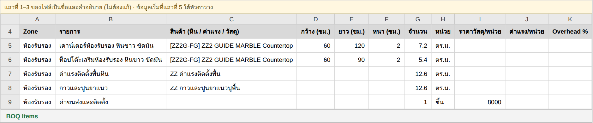
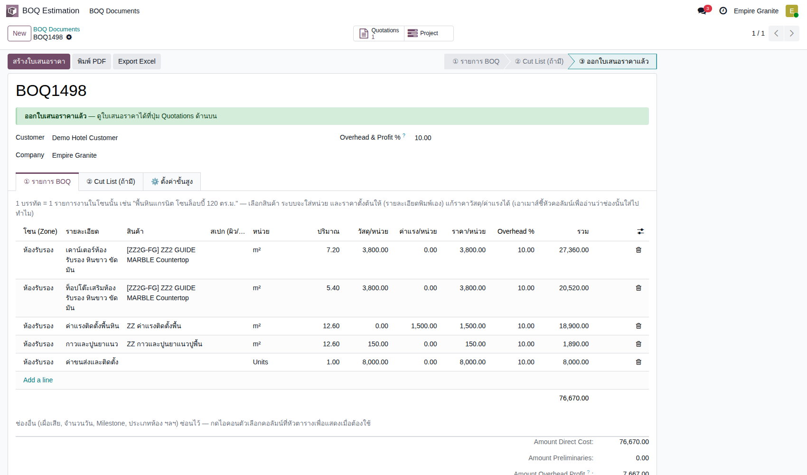
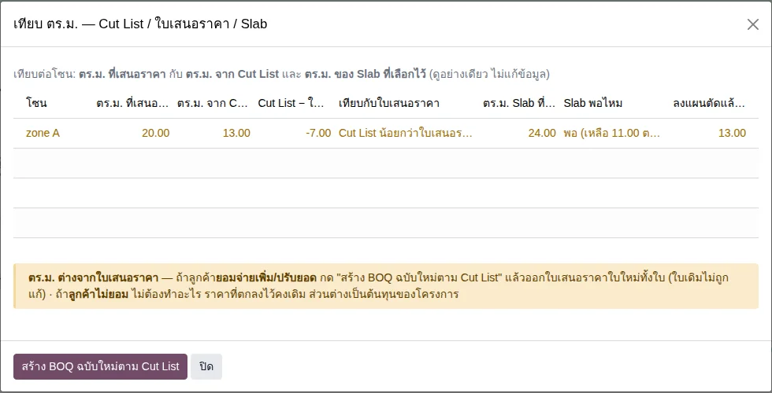

อัปเดตล่าสุด: 3 พฤศจิกายน 2569 (2026-11-03) · เขียนใหม่ทั้งบท ตรวจกับ boq_estimation 1.56.0 บนระบบทดสอบ eg-tst (ฉบับเดิมที่พูดถึง Rate Library และชุดค่าแรง/ชุดวัสดุ ถูกถอดออกเพราะระบบเลิกใช้แล้ว)
BOQ คืออะไร ใช้ทำอะไร
BOQ (Bill of Quantities) คือเอกสารถอดปริมาณงานก่อนเสนอราคา ทีมขายใส่รายการหิน ค่าแรง วัสดุ และค่าบริการอื่นเป็นบรรทัด แล้วกดสร้างใบเสนอราคาได้ทันที ราคาและจำนวนไม่ต้องพิมพ์ซ้ำ หลักคิดคือ เสนอราคาจาก ตร.ม. ก่อน แล้วเติม Cut List ทีหลังได้
ฟอร์ม BOQ มี 3 แท็บ
| แท็บ | ทำอะไร | จำเป็นไหม |
|---|---|---|
| ① รายการ BOQ | ใส่บรรทัดทั้งหมด: หิน (FG) · ค่าแรง · วัสดุสิ้นเปลือง · ค่าบริการอื่น พร้อมโซนงาน จำนวน และราคา | จำเป็น |
| ② Cut List (ถ้ามี) | นำเข้าชิ้นงานจาก Excel ได้ทั้งก่อนและหลังออกใบเสนอราคา ตร.ม. และราคาที่เสนอไว้ไม่เปลี่ยน | ไม่จำเป็น |
| ③ ออกใบเสนอราคา | กด "สร้างใบเสนอราคา" ดูใบที่ได้ที่ปุ่ม Quotations | — |
วิธีที่แนะนำ: นำเข้ารายการจาก Excel
- เมนู BOQ Estimation → BOQ Documents → Import Excel เลือกลูกค้า แล้วกด ดาวน์โหลดเทมเพลต (ต้องเลือกลูกค้าก่อน)
- กรอกในไฟล์ 1 แถว = 1 รายการ = 1 ประเภท (หิน ค่าแรง วัสดุ แยกคนละแถว) คอลัมน์ "สินค้า (หิน / ค่าแรง / วัสดุ)" คลิกแล้วเลือกจากรายการ ห้ามพิมพ์ชื่อเอง · ขนาดเป็น ซม. · จำนวนของค่าแรง/วัสดุกรอกเอง (เช่นเท่ากับพื้นที่หินทั้งโซน) · ชื่อ โซนต้องตรงกันทุกแถวของโซนนั้น
- กลับมาที่ Import Excel อัปโหลดไฟล์ กด อ่านไฟล์ ตรวจหน้าตัวอย่าง (ถ้ามีแถวผิดจะบอกตรงแถวนั้น) แล้วกด สร้าง BOQ ได้ BOQ ใบใหม่ทุกครั้ง ไม่ทับใบเดิม
- ที่ BOQ กด สร้างใบเสนอราคา ได้ใบเสนอราคาที่ค่าแรงและวัสดุเป็นบรรทัดสินค้าของตัวเอง



ตั้งสินค้าค่าแรง/วัสดุก่อนใช้ (ทำครั้งเดียว)
สินค้าที่จะใช้เป็นค่าแรงหรือวัสดุต้องตั้ง ประเภทรายการ BOQ ที่ฟอร์มสินค้า (เลือก "ค่าแรง" หรือ "วัสดุสิ้นเปลือง") และใส่ Cost ให้ถูก เพราะ Cost คือต้นทุนที่ระบบลงบัญชีตอนผลิต ส่วนราคาขายคือที่เรียกเก็บลูกค้า สองช่องนี้เป็นคนละตัวเลข สินค้าที่ตั้งประเภทแล้วเท่านั้นที่ขึ้นใน dropdown ของเทมเพลต
ต้นทุนค่าแรง/วัสดุไปลงบัญชีเมื่อไหร่ และเท่าไร
ต้นทุนลงตอน ผลิต FG เสร็จ ไม่ใช่ตอนออกใบเสนอราคา คิดจาก Cost ของสินค้า × จำนวนในบรรทัด BOQ × สัดส่วนที่ผลิตจริงของโซนนั้น เพราะบรรทัดหินหนึ่งบรรทัดอาจผลิตหลายใบสั่ง (หนึ่งใบต่อ Slab lot) ระบบจึงแบ่งต้นทุนตามสัดส่วนพื้นที่ ไม่ให้ลงซ้ำ
กฎที่ต้องรู้: ค่าแรง/วัสดุจะลงต้นทุนก็ต่อเมื่อ โซนเดียวกันมีบรรทัดหินที่นับเป็น ตร.ม. (ใช้พื้นที่หินของโซนเป็นฐานแบ่ง) · ชื่อโซนของค่าแรง/วัสดุต้องตรงกับโซนของหิน
Cut List หลังขายก็ได้
ยังไม่มี Cut List ไม่เป็นไร ออกใบเสนอราคาและยืนยันขายจากแท็บ ① ได้เลย เมื่อได้ Cut List ค่อยกด นำเข้า Cut List ระบบเติมชิ้นงานเข้าบรรทัดโซนเดียวกัน และส่งต่อถึงใบสั่งผลิต FG โดย ตร.ม. และราคาที่เสนอไว้ไม่เปลี่ยน ชื่อโซนในไฟล์ต้องตรงกับโซนใน BOQ · กด เทียบ ตร.ม. เพื่อดูต่อโซน: ตร.ม. ที่เสนอ, จาก Cut List, ของ Slab ที่เลือก และที่ลงแผนตัดแล้ว (ดูอย่างเดียว) · ถ้า ตร.ม. จริงต่างจากที่เสนอและลูกค้ายอมปรับยอด กด "สร้าง BOQ ฉบับใหม่ตาม Cut List" แล้วออกใบเสนอราคาใหม่ทั้งใบ (ใบเดิมไม่ถูกแก้) ถ้าลูกค้าไม่ยอม ไม่ต้องทำอะไร ราคาที่ตกลงไว้คงเดิม

พิมพ์ PDF / Export Excel
จาก BOQ เดียวกัน กดปุ่ม พิมพ์ PDF หรือ Export Excel ได้ทันที ทั้งสองแบบจัดกลุ่มตามโซนพร้อม Sub-Total (หน้าจอปุ่มยังไม่ได้ตรวจซ้ำกับรุ่น 1.56)
ทำตามทีละขั้นและตรวจผล
- คู่มือกดตาม: BOQ ค่าแรง/วัสดุเป็นรายการ — ตั้งสินค้า → Excel → ใบเสนอราคา → ผลิต → ส่งของ → ใบแจ้งหนี้ → P&L พร้อมตัวเลขที่ต้องเห็น
- Golden Path: BOQ ค่าแรง/วัสดุเป็นรายการ — 16 เคสตรวจผล
- BOQ ต่างจาก Cut List อย่างไร ดูบทที่ 35
ที่ยังเป็นคำถามกับลูกค้า / ฝ่ายบัญชี
- ค่าแรงมาตรฐานของ FG (1,500/ตร.ม.) กับค่าแรงใน BOQ ลงบัญชีเดียวกัน (511120) — ควรแยกค่าแรงติดตั้งหน้างานไปบัญชีอื่นหรือไม่
- ต้นทุนลงตอนผลิตเสร็จ ไม่ใช่ตอนส่งของ — ยอมรับได้หรือไม่
- VAT คิดเฉพาะบรรทัดหินใช่หรือไม่
- ใบเสนอราคาที่ส่งของหรือออกใบแจ้งหนี้แล้ว ไม่มีทางแทนที่ ต้องใช้ใบลดหนี้
ส่วนนี้อ้างอิงจากการเดินจริงบน eg-tst ด้วยหิน FG ที่ขายเป็น ตร.ม. ยังไม่ได้ทดสอบกรณีค่าแรงโซนไม่ตรงกับโซนหิน และงานที่ขายเป็นชิ้น (เช่นโคมไฟ) ซึ่งยังไม่ลงต้นทุนค่าแรง/วัสดุจาก BOQ